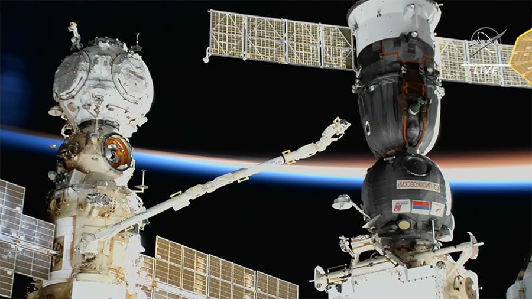
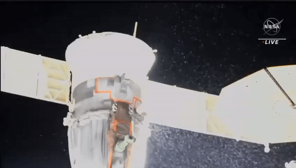

ဒီ ဖြစ်စဉ်မှာ အာကာသ စခန်းမှာ ဆိုက်ကပ်ထားတဲ့ ဆိုယု အာကာသ ယာဉ်ရဲ့ အအေးပေး စနစ်မှာ အသုံးပြုတဲ့ အအေးပေး အရည် (coolant) တွေ အာကာသ ထဲကို ယိုထွက် နေတာကို နာဆာက ထုတ်ပြန်တဲ့ ဗီဒီယိုမှာ မြင်တွေ့ ကြရပါတယ်။
အခု ဖြစ်စဉ်မှာ ထူးခြားတာ ကတော့ ဒီလို ယိုစိမ့်ထွက်တဲ့ ဒီဇင်ဘာ ၁၄ ရက်နေ့ဟာ ကမ္ဘာကို ဂျင်မစ်နစ် ဥက္ကာမိုး ရွာကျချိန်နဲ့ တိုက်ဆိုင် နေတာလဲ ဖြစ်ပါတယ်။ ယာဉ်အပြင်ဖက် ကို စက်ရုပ် စေလွှတ်ပြီး လေ့လာ စစ်ဆေး ရာမှာလဲအလွန် သေးငယ်တဲ့ အပေါက်လေး တခု ပေါက်နေတာကို တွေ့မြင် ခဲ့ကြရပါတယ်။ ဒါ့ကြောင့် မူလက ဒီ အပေါက် လေးဟာ ဂျင်မစ်နစ် ဥက္ကာမိုး (Geminid meteor shower) ရွာကျချိန် ဥက္ကာခဲ ဝင်တိုက်မိပြီး ပေါက်သွားခဲ့တာ ဖြစ်မလားလို့ တွေးဆခဲ့ ကြပါတယ်။
ဒါပေမယ့် အခု အပေါက် ပေါက်နေတဲ့ နေရာဟာ ဥက္ကာပျံတွေ ဝင်ရောက်လာတဲ့ အရပ်နဲ့ ဆန့်ကျင်ဖက်မှာ ဖြစ်နေပါတယ်။ ဒါ့ကြောင့် နာဆာက ပညာရှင် တွေရော၊ မော်စကိုက ရုရှ ပညာရှင်တွေ ရောက အခုဖြစ်စဉ်မှာ ဂျင်မစ်နစ် ဥက္ကာမိုးကြောင့် မဖြစ်နိုင်ဘူးလို့ သုံးသပ် ကြပါတယ်။

အခု ဖြစ်စဉ်နဲ့ ပတ်သက်လို့ နာဆာ ပညာရှင်တွေဟာ ရုရှား ပညာရှင် တွေနဲ့ အတူတကွ ပူးပေါင်းပြီး စုံစမ်း စစ်ဆေးမှု ပြုလုပ် နေပါတယ်။ အခု ဖြစ်ရပ်ဟာ ဂျစ်မစ်နစ် ဥက္ကာမိုးကြောင့် မဟုတ်ဘူး ဆိုပေမယ့် အာကာသ အမှိုက်လို အရာမျိုး လာမှန်တာလဲ ဖြစ်နိုင်တယ်လို့ သိရပါတယ်။ ဒီလောက် အပေါက်လေး သေးသေးလေး ပေါက်သွားစေတဲ့ အရာ ဝတ္ထုဟာ အလွန် သေးငယ်မှာမို့ သူ့ကို မြင်တွေ့ နိုင်ဖို့ ဆိုတာကတော့ သိပ်မဖြစ်နိုင်ဘူးလို့ ဆိုကြပါတယ်။
ဒီ အာကာသ ယာဉ်ဟာ လာမယ့်နှစ် မတ်လမှာ ရုရှား ယာဉ်မှူး နှစ်ဦးနဲ့ အမေရိကန် ယာဉ်မှူး တစ်ဦးတို့ကို ပြန်လည် သယ်ဆောင်ပြီး ကမ္ဘာကို ပြန်လာဖို့ စီစဉ်ထားတာ ဖြစ်ပါတယ်။

အကယ်လို့သာ ဒီ အာကာသယာဉ်ပေါ် လူသယ်ဆောင်ပြီး ကမ္ဘာပေါ် ပြန်ဆင်းဖို့ စိတ်မချရဘူး ဆိုရင် လာမယ့်နှစ် မတ်လ လွှတ်တင်မယ့် နောက်ထပ် ဆိုယုဇ် အာကာသ ယာဉ်ကို အချိန်စောပြီး အမြန် လွှတ်တင်ဖို့ လိုကောင်း လိုမှာ ဖြစ်ပါတယ်။ ဒီ လွှတ်တင်မယ့် ဆိုယုဇ် အာကာသယာဉ်ပေါ်မှာလဲ ယာဉ်မှူး ၃ ဦး သယ်ဆောင်သွားဖို့ မူလက စီစဉ် ထားခဲ့တာ ဖြစ်ပါတယ်။ ဒါပေမယ့် အချိန်စောပြီး လွှတ်တင်မယ် ဆိုရင်တော့ လူမပါပဲ စေလွှတ်သွား မယ်လို့ သိရပါတယ်။
ဒီလို အာကာသယာဉ် အစားထိုး စေလွှတ် ခဲ့ရင်တော့ လက်ရှိ ထိခိုက်သွားတဲ့ ဆိုယုဇ် ယာဉ်ကို လူမပါပဲ ကမ္ဘာပေါ် ပြန်လည် ဆင်းသက် စေမယ်လို့ သိရပါတယ်။ ဒီ့နောက်မှာတော့ ပညာရှင် တွေက မြေပြင်မှာ ဒီယာဥ်ကို အသေးစိန် လေ့လာ စမ်းစစ်မှုတွေ ဆက်လက် ပြုလုပ်သွားမှာ ဖြစ်တယ်လို့ သိရပါတယ်။
Ref: Hole in leaky Russian Soyuz spacecraft not caused by Geminid meteor | Space